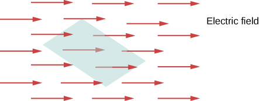
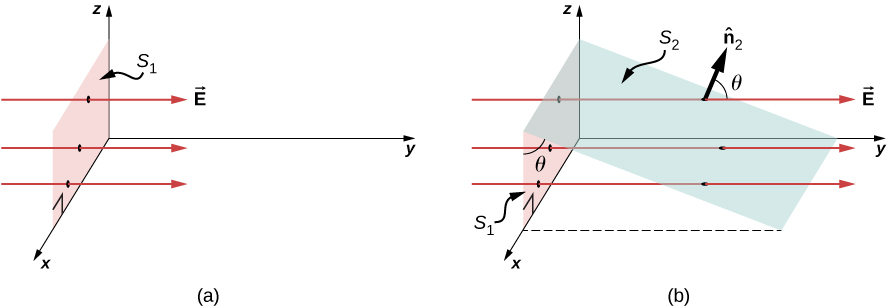
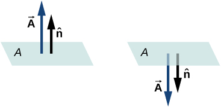
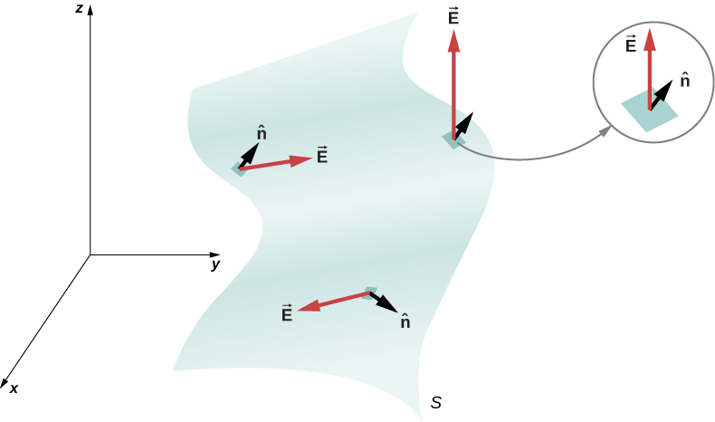
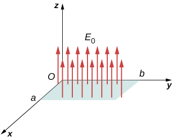
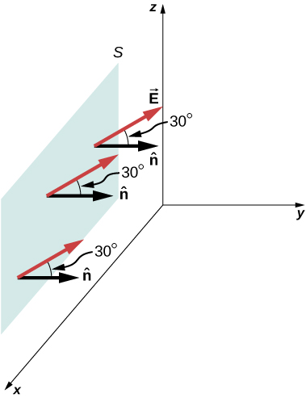
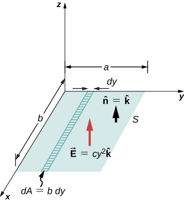

The concept of flux describes how much of something goes through a given area. More formally, it is the dot product of a vector field (in this chapter, the electric field) with an area. You may conceptualize the flux of an electric field as a measure of the number of electric field lines passing through an area ([link]). The larger the area, the more field lines go through it and, hence, the greater the flux; similarly, the stronger the electric field is (represented by a greater density of lines), the greater the flux. On the other hand, if the area rotated so that the plane is aligned with the field lines, none will pass through and there will be no flux.
The flux of an electric field through the shaded area captures information about the “number” of electric field lines passing through the area. The numerical value of the electric flux depends on the magnitudes of the electric field and the area, as well as the relative orientation of the area with respect to the direction of the electric field.

A macroscopic analogy that might help you imagine this is to put a hula hoop in a flowing river. As you change the angle of the hoop relative to the direction of the current, more or less of the flow will go through the hoop. Similarly, the amount of flow through the hoop depends on the strength of the current and the size of the hoop. Again, flux is a general concept; we can also use it to describe the amount of sunlight hitting a solar panel or the amount of energy a telescope receives from a distant star, for example.
To quantify this idea, [link](a) shows a planar surface of area that is perpendicular to the uniform electric field If N field lines pass through , then we know from the definition of electric field lines (Electric Charges and Fields) that or
The quantity is the electric flux through . We represent the electric flux through an open surface like by the symbol . Electric flux is a scalar quantity and has an SI unit of newton-meters squared per coulomb (). Notice that may also be written as , demonstrating that electric flux is a measure of the number of field lines crossing a surface.
(a) A planar surface of area is perpendicular to the electric field . N field lines cross surface . (b) A surface of area whose projection onto the xz-plane is .The same number of field lines cross each surface.

Now consider a planar surface that is not perpendicular to the field. How would we represent the electric flux? [link](b) shows a surface of area that is inclined at an angle to the xz-plane and whose projection in that plane is (area ). The areas are related by Because the same number of field lines crosses both and , the fluxes through both surfaces must be the same. The flux through is therefore Designating as a unit vector normal to (see [link](b)), we obtain
Check out this video to observe what happens to the flux as the area changes in size and angle, or the electric field changes in strength.
Area Vector
For discussing the flux of a vector field, it is helpful to introduce an area vector This allows us to write the last equation in a more compact form. What should the magnitude of the area vector be? What should the direction of the area vector be? What are the implications of how you answer the previous question?
The area vector of a flat surface of area A has the following magnitude and direction:
Magnitude is equal to area (A)
Direction is along the normal to the surface (); that is, perpendicular to the surface.
Since the normal to a flat surface can point in either direction from the surface, the direction of the area vector of an open surface needs to be chosen, as shown in [link].
The direction of the area vector of an open surface needs to be chosen; it could be either of the two cases displayed here. The area vector of a part of a closed surface is defined to point from the inside of the closed space to the outside. This rule gives a unique direction.

Since is a unit normal to a surface, it has two possible directions at every point on that surface ([link](a)). For an open surface, we can use either direction, as long as we are consistent over the entire surface. Part (c) of the figure shows several cases.
(a) Two potential normal vectors arise at every point on a surface. (b) The outward normal is used to calculate the flux through a closed surface. (c) Only has been given a consistent set of normal vectors that allows us to define the flux through the surface.
However, if a surface is closed, then the surface encloses a volume. In that case, the direction of the normal vector at any point on the surface points from the inside to the outside. On a closed surface such as that of [link](b), is chosen to be the outward normal at every point, to be consistent with the sign convention for electric charge.
Electric Flux
Now that we have defined the area vector of a surface, we can define the electric flux of a uniform electric field through a flat area as the scalar product of the electric field and the area vector, as defined in Products of Vectors:
[link] shows the electric field of an oppositely charged, parallel-plate system and an imaginary box between the plates. The electric field between the plates is uniform and points from the positive plate toward the negative plate. A calculation of the flux of this field through various faces of the box shows that the net flux through the box is zero. Why does the flux cancel out here?
Electric flux through a cube, placed between two charged plates. Electric flux through the bottom face (ABCD) is negative, because is in the opposite direction to the normal to the surface. The electric flux through the top face (FGHK) is positive, because the electric field and the normal are in the same direction. The electric flux through the other faces is zero, since the electric field is perpendicular to the normal vectors of those faces. The net electric flux through the cube is the sum of fluxes through the six faces. Here, the net flux through the cube is equal to zero. The magnitude of the flux through rectangle BCKF is equal to the magnitudes of the flux through both the top and bottom faces.
The reason is that the sources of the electric field are outside the box. Therefore, if any electric field line enters the volume of the box, it must also exit somewhere on the surface because there is no charge inside for the lines to land on. Therefore, quite generally, electric flux through a closed surface is zero if there are no sources of electric field, whether positive or negative charges, inside the enclosed volume. In general, when field lines leave (or “flow out of”) a closed surface, is positive; when they enter (or “flow into”) the surface, is negative.
Any smooth, non-flat surface can be replaced by a collection of tiny, approximately flat surfaces, as shown in [link]. If we divide a surface S into small patches, then we notice that, as the patches become smaller, they can be approximated by flat surfaces. This is similar to the way we treat the surface of Earth as locally flat, even though we know that globally, it is approximately spherical.
A surface is divided into patches to find the flux.

To keep track of the patches, we can number them from 1 through N . Now, we define the area vector for each patch as the area of the patch pointed in the direction of the normal. Let us denote the area vector for the ith patch by (We have used the symbol to remind us that the area is of an arbitrarily small patch.) With sufficiently small patches, we may approximate the electric field over any given patch as uniform. Let us denote the average electric field at the location of the ith patch by
Therefore, we can write the electric flux through the area of the ith patch as
The flux through each of the individual patches can be constructed in this manner and then added to give us an estimate of the net flux through the entire surface S, which we denote simply as .
This estimate of the flux gets better as we decrease the size of the patches. However, when you use smaller patches, you need more of them to cover the same surface. In the limit of infinitesimally small patches, they may be considered to have area dA and unit normal . Since the elements are infinitesimal, they may be assumed to be planar, and may be taken as constant over any element. Then the flux through an area dA is given by It is positive when the angle between and is less than and negative when the angle is greater than . The net flux is the sum of the infinitesimal flux elements over the entire surface. With infinitesimally small patches, you need infinitely many patches, and the limit of the sum becomes a surface integral. With representing the integral over S,
In practical terms, surface integrals are computed by taking the antiderivatives of both dimensions defining the area, with the edges of the surface in question being the bounds of the integral.
To distinguish between the flux through an open surface like that of [link] and the flux through a closed surface (one that completely bounds some volume), we represent flux through a closed surface by
where the circle through the integral symbol simply means that the surface is closed, and we are integrating over the entire thing. If you only integrate over a portion of a closed surface, that means you are treating a subset of it as an open surface.
Flux of a Uniform Electric Field
A constant electric field of magnitude points in the direction of the positive z-axis ([link]). What is the electric flux through a rectangle with sides a and b in the (a) xy-plane and in the (b) xz-plane?
Calculating the flux of through a rectangular surface.

Strategy
Apply the definition of flux: , where the definition of dot product is crucial.
Solution
In this case,
Here, the direction of the area vector is either along the positive y-axis or toward the negative y-axis. Therefore, the scalar product of the electric field with the area vector is zero, giving zero flux.
Significance
The relative directions of the electric field and area can cause the flux through the area to be zero.
Flux of a Uniform Electric Field through a Closed Surface
A constant electric field of magnitude points in the direction of the positive z-axis ([link]). What is the net electric flux through a cube?
Calculating the flux of through a closed cubic surface.
Strategy
Apply the definition of flux: , noting that a closed surface eliminates the ambiguity in the direction of the area vector.
Solution
Through the top face of the cube,
Through the bottom face of the cube, because the area vector here points downward.
Along the other four sides, the direction of the area vector is perpendicular to the direction of the electric field. Therefore, the scalar product of the electric field with the area vector is zero, giving zero flux.
The net flux is .
Significance
The net flux of a uniform electric field through a closed surface is zero.
Electric Flux through a Plane, Integral Method
A uniform electric field of magnitude 10 N/C is directed parallel to the yz-plane at above the xy-plane, as shown in [link]. What is the electric flux through the plane surface of area located in the xz-plane? Assume that points in the positive y-direction.
The electric field produces a net electric flux through the surface S.

Strategy
Apply , where the direction and magnitude of the electric field are constant.
Solution
The angle between the uniform electric field and the unit normal to the planar surface is . Since both the direction and magnitude are constant, E comes outside the integral. All that is left is a surface integral over dA, which is A. Therefore, using the open-surface equation, we find that the electric flux through the surface is
Significance
Again, the relative directions of the field and the area matter, and the general equation with the integral will simplify to the simple dot product of area and electric field.
Check Your Understanding What angle should there be between the electric field and the surface shown in [link] in the previous example so that no electric flux passes through the surface?
Place it so that its unit normal is perpendicular to
Inhomogeneous Electric Field
What is the total flux of the electric field through the rectangular surface shown in [link]?
Since the electric field is not constant over the surface, an integration is necessary to determine the flux.

Strategy
Apply . We assume that the unit normal to the given surface points in the positive z-direction, so Since the electric field is not uniform over the surface, it is necessary to divide the surface into infinitesimal strips along which is essentially constant. As shown in [link], these strips are parallel to the x-axis, and each strip has an area
Solution
From the open surface integral, we find that the net flux through the rectangular surface is
Significance
For a non-constant electric field, the integral method is required.
Check Your Understanding If the electric field in [link] is what is the flux through the rectangular area?
Summary
The electric flux through a surface is proportional to the number of field lines crossing that surface. Note that this means the magnitude is proportional to the portion of the field perpendicular to the area.
The electric flux is obtained by evaluating the surface integral
where the notation used here is for a closed surface S.
Conceptual Questions
Discuss how to orient a planar surface of area A in a uniform electric field of magnitude to obtain (a) the maximum flux and (b) the minimum flux through the area.
a. If the planar surface is perpendicular to the electric field vector, the maximum flux would be obtained. b. If the planar surface were parallel to the electric field vector, the minimum flux would be obtained.
What are the maximum and minimum values of the flux in the preceding question?
The net electric flux crossing a closed surface is always zero. True or false?
False. The net electric flux crossing a closed surface is always zero if and only if the net charge enclosed is zero.
The net electric flux crossing an open surface is never zero. True or false?
Problems
A uniform electric field of magnitude is perpendicular to a square sheet with sides 2.0 m long. What is the electric flux through the sheet?
Calculate the flux through the sheet of the previous problem if the plane of the sheet is at an angle of to the field. Find the flux for both directions of the unit normal to the sheet.
electric field in direction of unit normal; electric field opposite to unit normal
Find the electric flux through a rectangular area between two parallel plates where there is a constant electric field of 30 N/C for the following orientations of the area: (a) parallel to the plates, (b) perpendicular to the plates, and (c) the normal to the area making a angle with the direction of the electric field. Note that this angle can also be given as
The electric flux through a square-shaped area of side 5 cm near a large charged sheet is found to be when the area is parallel to the plate. Find the charge density on the sheet.
Two large rectangular aluminum plates of area face each other with a separation of 3 mm between them. The plates are charged with equal amount of opposite charges, . The charges on the plates face each other. Find the flux through a circle of radius 3 cm between the plates when the normal to the circle makes an angle of with a line perpendicular to the plates. Note that this angle can also be given as
A square surface of area is in a space of uniform electric field of magnitude . The amount of flux through it depends on how the square is oriented relative to the direction of the electric field. Find the electric flux through the square, when the normal to it makes the following angles with electric field: (a) , (b) , and (c) . Note that these angles can also be given as .
a.
b. ; c.
A vector field is pointed along the z-axis, (a) Find the flux of the vector field through a rectangle in the xy-plane between and . (b) Do the same through a rectangle in the yz-plane between and . (Leave your answer as an integral.)
Consider the uniform electric field What is its electric flux through a circular area of radius 2.0 m that lies in the xy-plane?
Repeat the previous problem, given that the circular area is (a) in the yz-plane and (b) above the xy-plane.
An infinite charged wire with charge per unit length lies along the central axis of a cylindrical surface of radius r and length l. What is the flux through the surface due to the electric field of the charged wire?
Glossary
area vector
vector with magnitude equal to the area of a surface and direction perpendicular to the surface
electric flux
dot product of the electric field and the area through which it is passing
flux
quantity of something passing through a given area
![Figure a shows a curved rectangular surface. Two arrows originate from a point at its center and point in opposite directions. They are both perpendicular to the surface. They are labeled n hat 1 and n hat 2. Figure b shows a 3 dimensional surface shaped somewhat like a light bulb. There are five arrows labeled n hat, which originate from various points on the surface and point outward, perpendicular to the surface. Figure c shows three rectangular surfaces labeled S1, S2 and S3. Two arrows labeled n hat are perpendicular to S1 and point in opposite directions. Three arrows labeled n hat are perpendicular to S2, one pointing in a direction opposite to the other two. There are three arrows perpendicular to S3. All point outward from the same side of the surface.](CNX_UPhysics_23_01_NormVec.jpg)
![A cube ABCDKFGH is shown in the center. A diagonal plane is shown within it from KF to BC. The top surface of the cube, FGHK has a plane labeled minus q slightly above it and parallel to it. Similarly, another plane is labeled plus q is shown slightly below the bottom surface of the cube, parallel to it. Small red arrows are shown pointing upwards from the bottom plane, pointing up to the bottom surface of the cube, pointing up from the top surface of the cube and pointing up to the top plane. These are labeled vector E.](CNX_UPhysics_23_01_FluxCube.jpg)